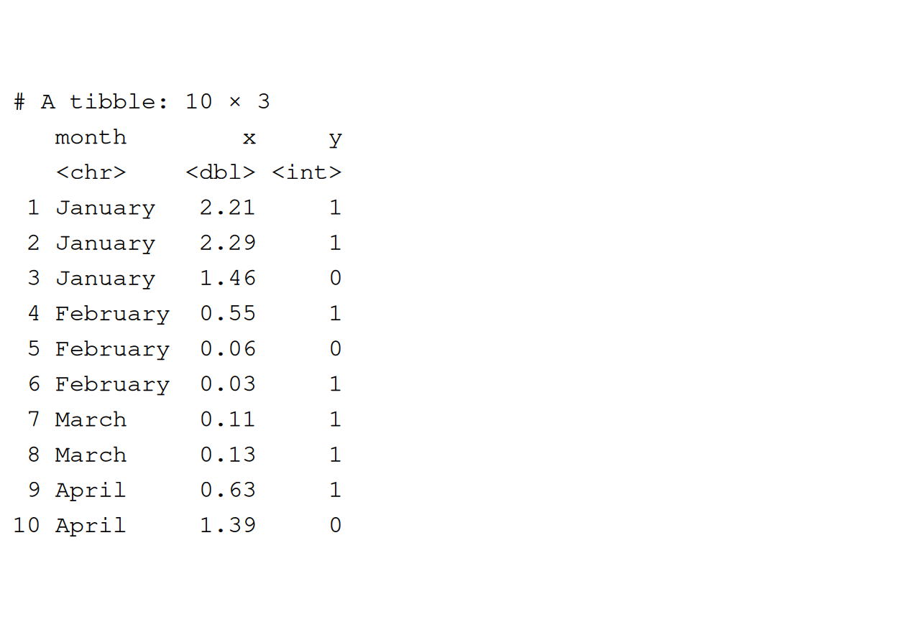
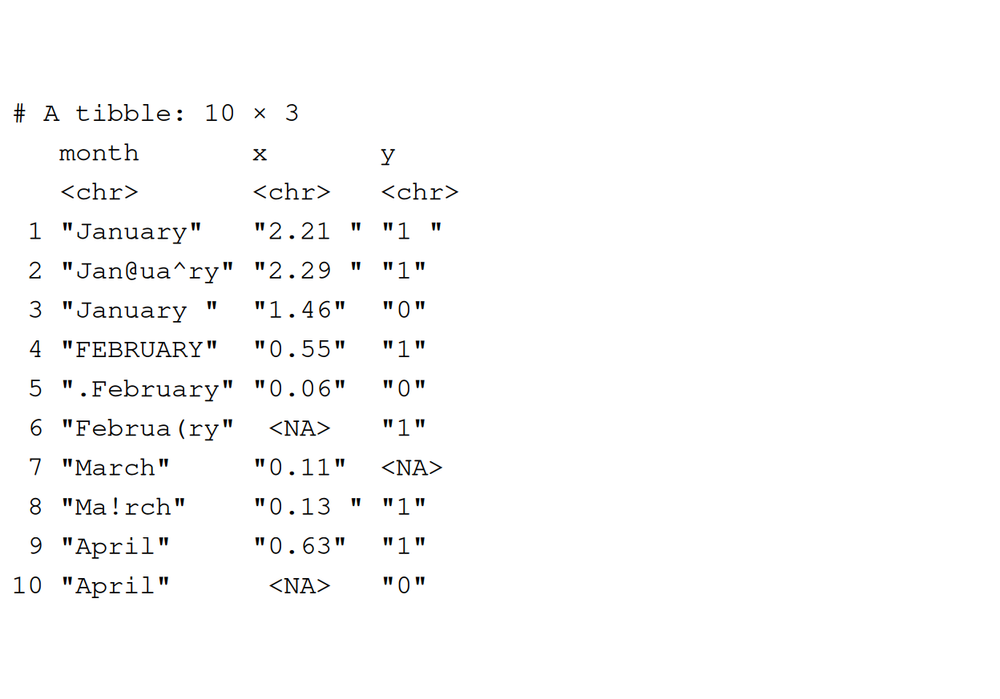
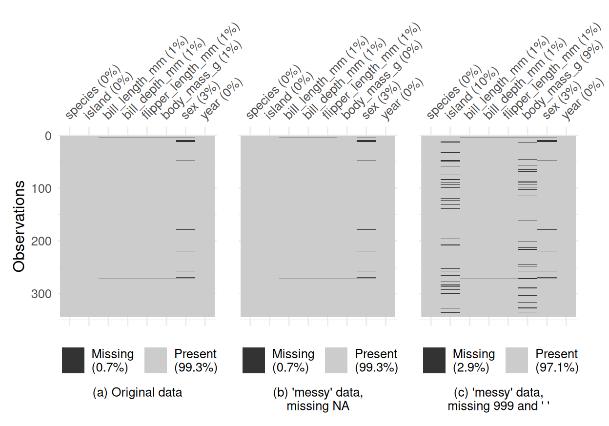
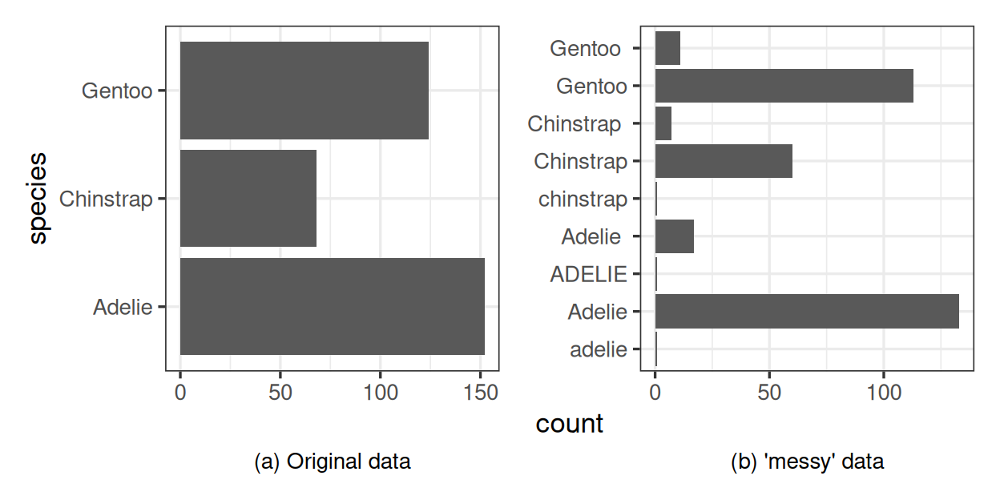

![]()

Making ‘messy’ Data: An R Package for Teaching Data Wrangling with Realistic Data
Abstract
Equipping students in statistics and data science with the necessary data wrangling skills to handle real-world data is a crucial aspect of their education. Real data, unlike the clean, structured examples often used in teaching, can include a variety of challenges such as typographical errors, missing values encoded in unconventional ways, unexpected spaces, or other inconsistencies that stem from human error or software incompatibility. These issues are common in real datasets and are essential for students to learn how to address in order to develop the practical skills needed for professional data analysis.
However, while real data offers these valuable learning opportunities, it can also be too messy and unpredictable to be useful in a time-constrained classroom environment. Teaching with such data may overwhelm students or detract from core statistical concepts. To address this, this paper presents an R package designed to introduce controlled levels of messiness into existing, clean teaching datasets. This package allows educators to retain the structure and simplicity of familiar teaching examples while providing students with a realistic, manageable data cleaning experience. By using this approach, instructors can implicitly teach critical data wrangling techniques, preparing students for the complexities they will encounter in real-world data analysis.
Keywords
real-world data, randomness, data issues, statistics
1 Introduction
In many academic courses, the exercises and assessments undertaken by students rely on toy datasets (those that are pre-cleaned and ready for students to use for the primary purpose of the session) to illustrate a concept Varlamis (2025). However, these datasets are not very realistic, and do not represent the data that students will later encounter in the real world. The gap between examples used in teaching and introductory textbooks and the real world is notably large (Hsu et al. 2022). Real datasets often contain issues such as typographical errors, missing values encoded in strange ways, or unexpected values. These data issues can derive from human error, poor data collection processes, or errors in pre-processing with software. Therefore, these issues are likely to arise in any analytical project, and so it is essential that students practice skills to identify and resolve them.
When instructors of introductory statistics or data science courses rely on these toy datasets for teaching purposes, students are not given the opportunity to develop their data wrangling skills. Instead, students are frequently expected to acquire these skills informally or are assumed to already possess them. This presents a challenge, as students may struggle with data preparation tasks that are essential for meaningful analysis. As Horton and Hardin (2015) emphasize, ‘if an analyst cannot wrangle data in a form to answer a statistical question, their utility may be limited’. Ensuring that students develop these skills is therefore crucial for their ability to engage effectively with real-world data. The use of concrete examples can also help students to better understand abstract concepts, which is a common difficulty (Silva and Sarnecka 2025). The importance of practicing data wrangling skills is further emphasised by the fact that it can be harder for students to identify the mistakes they have made in data wrangling processes, compared to other tasks such as visualisation (Çetinkaya-Rundel and Ellison 2021).
Though some programmes may include data wrangling as a standalone course, there are many opportunities to integrate data wrangling practice into other courses where students work with data. However, this can present challenges for instructors, who may not view data wrangling as part of their teaching responsibilities or may already struggle to cover core subject material within the constraints of a semester. Many available teaching datasets are already clean, and instructors often lack the time to source or modify datasets to better reflect real-world complexities. As a result, despite the importance of data wrangling skills, finding practical ways to incorporate them into existing coursework remains a significant challenge.
2 Background
The use of data in teaching statistics and data science has a long history, dating back to the early days of statistical education when small, manually collected datasets were used to illustrate key concepts. Classic datasets, such as the iris dataset have been widely used for decades. As methodology and technology evolve, it is essential that the examples used in teaching effectively prepare students for the modern world of data.
2.1 Existing datasets for teaching
A range of teaching-specific resources exists for statistics and data science education, including domain-specific datasets and instructional tools. In the health sciences, for example, the Teaching of Statistics in the Health Sciences (Teaching of Statistics in the Health Sciences 2025) resources portal provides datasets for teaching purposes, derived from real patient data. Many datasets, including titanic, mtcars, iris, and palmerpenguins, are also available through R (R Core Team 2024) which is commonly used for teaching practical data analysis skills in statistics courses (Zavez and Harel 2025). However, these datasets are often pre-cleaned or overly simplistic, making analyses too easy and limiting students’ exposure to real-world data challenges. Additionally, widely used datasets such as iris and titanic have extensive publicly available analyses, which, while helpful for learning syntax, may encourage students to rely on existing solutions rather than developing critical thinking and problem-solving skills. This issue is further amplified by the increasing use of AI-generated solutions, which allow students to bypass key aspects of data analysis. Introducing messier, more variable datasets helps ensure that students actively engage with data wrangling processes, rather than simply reproducing pre-existing approaches.
If the aim is to provide students with opportunities to learn how to work with real data, the natural suggestion may be to simply use real data when teaching. Roberto Rivera and Torres-Saavedra (2019) notes that when teaching using real data, “filtering, aggregating, cleaning, and other pre-processing could be needed; presenting an opportunity to introduce students to data management and data wrangling.” However, using real data in teaching presents several challenges. In some cases, real datasets cannot be shared due to ethical concerns, such as those in healthcare. They may also have undergone statistical disclosure control before becoming publicly available, limiting the types of analyses that they can be used to demonstrate. Even when real data can be shared, it is often too complex or messy for instructional use. If data wrangling is not the primary learning objective, students may spend excessive time on pre-processing rather than focusing on analytical concepts. Instructors may spend time pre-cleaning data to control the level of messiness, to strike a balance between realism and usability, allowing students to develop practical skills without being overwhelmed by unnecessary complexity. However, this creates an additional, potentially time-intensive task for instructors when identifying and preparing data for teaching. This can be further complicated by the fact that publicly-available datasets shared in online repositories do not always have data documentation (Mihaescu and Popescu 2021).
An alternative approach to obtaining data for teaching purposes is for educators to generate their own data through the use of simulation. Simulated datasets allow educators to control specific characteristics of the data, including the types of variables and how much wrangling by students would be required to make it usable for analysis. As discussed in Casement and McSweeney (2024), this approach provides flexibility in dataset design and therefore can be more pedagogically effective. However, the use of simulation to generate data requires that educators have some expertise in simulation and enough time to develop their own data-generating processes, which is often not the case. Lack of time for creating customised datasets, is a particular constraint when educators require datasets with different features for teaching different analytical methods over the course of a programme. Though Shutes (2009) presents R functions for simulating datasets for individual student assessments, these may not be relevant for all methodologies or application areas. Further, if not performed carefully, simulated data may also be too clean and have too little noise to be realistic.
This highlights the need for an approach to obtaining data for teaching purposes that has realistic features and data issues to allow students to practice data wrangling. At the same time, this approach should be quick and easy for instructors to use for data generation, and should ensure that the resulting data is not overly complex for the teaching scenario.
2.2 Common data issues
To best equip students with relevant data wrangling skills, it is important to identify which data issues they are most likely to encounter in the real world. As discussed in Lewis (2024), common data issues that require pre-analysis cleaning include dealing with inconsistent date formats, poor variable name choices, missing data encoded in a variety of ways, duplicated rows, variables encoded in incorrect formats, and differing formats of the same variable value.
Missing values are a common issue in data analysis. Though classes on handling and imputing missing values are not an uncommon feature of statistical modelling courses, the practice of initially identifying missing values in data is less common. In R (R Core Team 2024), missing values are explicitly represented as NA. In other software they may be encoded in a variety formats such as empty strings, a single space, placeholder values like 999, or other arbitrary indicators. Additionally, even within the same dataset, different columns may use different conventions for missing data. In some cases, multiple encodings may appear within a single column, each carrying distinct meanings. It is essential that students gain experience in recognising these inconsistencies, as failure to do so may result in overlooking missing values - which even the best choice of imputation method cannot overcome.
Text data, whether resulting from free-text responses or pre-defined categories, can often contain inconsistencies. This is particularly common in data originating from surveys, where open-ended questions may have been asked, or where questions and available answers have updated in different iterations of the survey. For data resulting from web scraping, there may be strange encodings where accented or non-Latin characters exist in the content, or where formatting cannot be easily retained. For example, chemical formulae such as NO2 may be recorded as "NO2" (without the subscript formatting) or "NO<sub>2</sub>"(with HTML tags retained). Other common sources of inconsistency in text data include variations in spacing, differences in letter case, and typographical errors. Visualisation techniques can be particularly useful for identifying these issues, as they help reveal patterns that may not be immediately apparent through visual inspection, especially when the proportion of such errors is small. However, many courses focus on teaching the use of data visualisation as a method of communicating results, and don’t allow enough time for data visualisation as a means of effective data validation (Hsu et al. 2022; Hudiburgh and Garbinsky 2020).
3 Methodology
Given the need for a more effective, realistic approach to generating data for teaching, the use of the ‘messy’ R package is proposed. The package takes a clean dataset and randomly introduces common data issues such as missing values, typographic errors, and inconsistencies in data representation. This approach provides students with the opportunity to practice essential data cleaning and wrangling skills, without the need for instructors to modify or replace their existing teaching examples. By adding controlled messiness to familiar datasets, the package allows students to engage with realistic data in a structured and manageable way.
The ‘messy’ package follows the tidy design principles (Hadley Wickham 2023) of being human-centered, consistent, composable, and inclusive. The package offers separate functions that perform specific data de-cleaning tasks, where functions names are indicative of their purpose. For example, the add_whitespace() function adds additional white space to character strings. As in the ‘tidyverse’ (Wickham et al. 2019), these separate functions can be easily piped together to create flexible and efficient combinations of tasks. Consistent argument names and implementations are used across these functions. Additionally, the package includes a wrapper function, messy(), that simplifies the process of creating messy data, allowing users to apply multiple data modifications with a single command. This design ensures that the package is intuitive and consistent, making it easy for users to integrate into their existing teaching workflows.
As with any package or function that utilises random variables, these functions require the user to set a seed to ensure their data generation is reproducible.
3.1 Functions available
The following functions are available in version 0.1.0 of the ‘messy’ package:
make_missing(): Randomly adds missing values into the dataset. The default is to randomly replace values withNA, the standard representation of missing values in R.add_whitespace(): Randomly adds white spaces at the end of character strings, or converts numeric columns to characters and then adds spaces. This type of error is often difficult to recognise by eye, and so this provides students with the opportunity to develop data wrangling processes for identifying unique values.change_case(): Randomly changes the case of character strings between lowercase, uppercase, and title case. This results in small variations of the way that category values are recorded.add_special_chars(): Randomly adds special characters, such as#,$or,, to character strings.duplicate_rows(): Duplicates rows and inserts them into the data, either in order or at random.messy_date_formats()/messy_datetime_formats(): Takes any date or date-time column and transforms it into a character column, sampling from any number of random of valid character representations.messy_datetime_tzones(): Takes any number of date-time columns and changes their time zones either totally at random, or from a user-provided list of time zones.split_dates()/split_datetimes(): These functions can split the “date” and “time” components of POSIXt columns and the “hour”, “month”, and “day” components of Date columns into multiple columns.messy_colnames(): Adds special characters and randomly capitalises characters in the column names. Note that it is recommended to apply this function last, to allow selection of columns by their original names.
The following also wraps several of the above modifications into a single, easy-to-use function:
messy(): This function applies themake_missing(),add_whitespace(),change_case(), andadd_special_chars()functions to the default columns with default parameters.
The remaining functions are not applied as part of the core messy() function to allow instructors to retain the original size and column names from the input data, as these aspects are likely to be key elements of existing teaching examples.
3.2 User options
The messy() function makes it easy to modify a dataset in one line with limited effort. However, there are several user options that can be changed to create more complex modifications:
- Columns to adjust: By default, and depending on the function, modification is either applied to all columns, all character or factor columns, or all date and date-time columns. However, users may specify a specific set of columns to modify. This also allows users to vary which functions and parameter values are applied to each column.
- Degree of messiness: The default is to modify each value in a column with a probability of 10%. The can be varied to create more or less common errors.
- Missing value representation: The default representation of missing values is
NA, but users may specify a different value, or combination of values. For example, in numeric columns they may choose to use0or999alongsideNA, and for character strings they may choose empty strings or a single space. - Case change type: By default, case changes are applied on the word level i.e. the case of an entire word is changed. User may alternatively choose to apply case changes on the letter level, resulting in increased variability in character string representation.
- Combination of functions: Since the functions are designed to be used in a piped workflow, it’s easy for users to define and apply a custom combination of functions to a variety of columns in the data.
4 Results
To illustrate the way that the ‘messy’ package can be used to modify teaching for teaching purposes, it is applied to (i) a small, toy dataset, and (ii) the ‘palmerpenguins’ dataset commonly used in teaching.
4.1 Application to a toy dataset
To illustrate the use of the messy() function and how its functions affect the dataset, we use a small toy, example dataset as input. As seen in Figure 1, the example data contains 3 columns - one character column with months of the year, one double column with numeric values, and one integer column with binary values. To allow printing of the entire output for illustrative purposes, only 10 rows are included. Since this is a toy example, not all features of the package can be exhibited in just 10 rows and 3 columns.
Running the messy() function on this toy data results in the modifications seen in Figure 2. The month column has had spaces and special characters added as well as case changes, and the x and y columns have had some values replaces with missing values, and had spaces added to the start or end of the numbers. This also results in the numeric and integer columns becoming character columns, due to the additional spaces. This creates exercises is removing special characters, converting from character to numeric values, and ensuring consistent case usage in categories.

messy() function on the clean dataset, which adds spaces, special characters, and missing values to the columns.
As described in Section 3, users may apply a custom combination of functions to their choice of columns, and alter the default parameter values. For example, to generate the output shown in Figure 3, a user has applied the make_missing() function to the month column with a missing value of an empty space, and to the x and y columns with missing values of NA and 999. The add_whitespace() function has then also been applied to the month column, with a probability of 50% to create an increase in the number of modifications.
In this example, this results in more subtle modifications. The numeric column remains numeric, and the integer column becomes numeric, making it more difficult to identify that something is not quite correct with the data. The changes to the ‘month’ column are also more difficult to identify by eye, using only additional spaces at the end of words. If viewing the data in a spreadsheet format, these inconsistencies are harder to spot by eye, and can create a nice motivational exercises for using programming languages for data processing, alongside data wrangling tasks.
Outside of the core messy() functions, further functions for data manipulation exist, including duplicate_rows(). For example, by setting messiness = 0.2, on average 20% of rows in the original data will be duplicated. Due to the random nature of ‘messy’, and to allow for rounding, the output may not always contain exactly 20% additional rows. By default, the duplicated rows are inserted directly underneath the original row. However, setting the shuffle argument to TRUE results in them being randomly inserted which will be more difficult for students to identify any duplication by eye.
duplicate_rows() function on the clean dataset.
To demonstrate the applications of messy date functions, we first create a date column in the example data, using the existing month column and setting all new date elements to be equal to the first of that month, in the year 2025.
duplicate_rows() function on the clean dataset.
The resulting output from applying the messy_date_formats() retains the correct dates, but with a variety of encodings. This will result in many automated date processing functions returning an error or the incorrect date as output.
4.2 Application to {palmerpenguins}
To illustrate the use of the ‘messy’ package on a more realistically sized dataset, the ‘palmerpenguins’ dataset (Horst et al. 2020) is used as an example. The ‘palmerpenguins’ dataset provides measurements of penguins from three species (Adélie, Chinstrap, and Gentoo) collected from three islands in the Palmer Archipelago, Antarctica. It includes variables such as species, island, bill length and depth, flipper length, body mass, and sex. The dataset is commonly used in data science education, supporting lessons in data visualisation, statistical modelling, and machine learning.
In this example, the make_missing() function is applied to the island and body_mass_g columns, with a blank space and 999 used to represent missing data, respectively. The add_whitespace() and change_case() functions are then applied to the species column, with the case change applied with a probability of 1%.
To demonstrate how the application of the ‘messy’ package can be used to create exercises and challenges for students, the data can be visualised using common data exploration charts.
The ‘visdat’ package (Tierney 2017) is commonly used to visualise the structure of datasets, and can be used to visualise missing data. By default, the package assumes that missing values are represented by NA. Figure 6 shows the output of visualising missing data for the original ‘palmerpenguins’ dataset and the ‘messy’ version (with the default NA missing values assumed, and the correct encoding used). The first two visualisations appear identical due to the non-standard representation of missing values in the modified columns. This highlights a common situation where students may start out with good intentions to explore patterns in missing values, but fail to identify how missing values have been encoded in the data and therefore miss values.

palmerpenguins data (a), a ‘messy’ version of the palmerpenguins data with default settings (b), and with correct settings (c).
The ‘visdat’ package can also be used to quickly visualise the column types in a dataset, and Figure 7 shows the types of columns in the original and modified ‘palmerpenguins’ data. By providing the ‘messy’ version of the dataset, students are exposed to a wider range of column types. It’s fairly common for columns to have the incorrect type, making recognising and addressing this issue an essential skill. For example, long category names are often recoded as numbers, and ordered categories (factors) are often left unordered and arranged alphabetically be default.

palmerpenguins data (a) and a ‘messy’ version of the palmerpenguins data (b).
When applying statistical methods using categorical columns, may students may assume that category values have been uniquely encoded. However, this is not always the case, and so learning how to aggregate category levels is Figure 8 shows the number of unique values in the species column of the ‘palmerpenguins’ data, before and after modification using the ‘messy’ package. Six additional formats of the category labels have been included, though these are only a small percentage of the whole column. This provides an opportunity for students to learn essential data cleaning techniques, such as removing leading and trailing whitespaces, standardising letter case, and reconciling inconsistencies in how the same values are encoded.

species column in the original palmerpenguins data (a) and a ‘messy’ version of the palmerpenguins data (b).
5 Discussion
These examples highlight how the ‘messy’ package may be used to modify datasets that instructors already use, to smoothly integrate different types of data wrangling challenges into their teaching. The exercises that can be developed from the modified, messy datasets give students experience of working with a wide range of data issues they are likely to later encounter in their analytical careers. It also gives educators the opportunity to emphasise the use of visualisation not only as a tool for data exploration, but also as a crucial step in validating and identifying inconsistencies in data.
For instructors using publicly available datasets for assessment purposes, the random nature of the output from ‘messy’ can ensure that no two datasets are identical. This may be particularly useful in the assessment setting where students receive data with the same structure but unique values to reducing the likelihood of plagiarism, as described by Shutes (2009). However, the random nature of the output means that it is more difficult for instructors to predict model outputs as easily. For example, when using make_missing() to randomly add missing values, it is not guaranteed that the distribution of the values has stayed the same. Therefore, students could fit the same models to their individual datasets and obtain very different results. Depending on the context of the model fitting within teaching, this may or may not be a desirable property of ‘messy’.
Although ‘messy’ is an R package, its usefulness extends beyond teaching R itself, as datasets can be saved as CSV files for use in other programming languages and software. Future work should develop a web application where educators can upload their own datasets, then download a ‘messy’ version in a variety of formats. The web application could also provide downloads of ‘messy’ versions of common datasets such as palemerpenguins or titanic. The ‘messy’ package is also valuable outside of teaching, for R developers who need datasets for testing functions and packages, as it introduces controlled inconsistencies that help evaluate robustness.
The messy package does currently have a few limitations, mainly in relation to how realistic the messiness of the resulting data can be given the general nature of the package, and the synthetic messiness it creates. For examples, it relies on the input and output data being an R object which either is, or can be coerced to, an R dataframe i.e. having a fixed number of rows and columns. Although this includes sf spatial dataframes, tidygraph networks, and nested tibbles, the messy() functions can only operate on the rectangular aspects of the data. It does not take into account features such as spatial geometries, network relationships, merged and nested cells, changing delimiters, or multiple sheets, all of which are common. This means that instructors may still have to perform some pre-processing of any real world data in order to pass it into the messy() function. These features cannot be easily represented within R, and so future work could incorporate the ability to export messy data in different formats, such as spreadsheets, containing these features.
The random and automated nature of the output also means that ‘messy’ is limited in how authentic the errors can be, especially for domain-specific problems. The output may not reflect real mistakes in specific fields, in the way that carefully-crafted simulation data might. However, this is simply the trade-off between the quick, user-friendly but general approach provided by ‘messy’, and a more time-consuming, but special approach performed entirely by a user. Since ‘messy’ outputs simple R objects, users could further customise the data issues with their own domain-specific alterations.
The current implementation of ‘messy’ assumes that variables are independent from each other, at least in how likely they are to be missing or exhibit data issues. In the real world, this is not always true. For example, a more realistic scenario might be that if variable X is missing, then variable Y must also be implicitly missing; or when variable X is equal to Category A, then variable Y is more likely to be reported in an unusual format. Future work could introduce conditional versions of the existing functions where users specify pairs (or sets) of columns in their data which should follow similar patterns of randomness, rather than editing columns independently to each other. Users would be able to specify the extent of the dependence between columns. Despite these limitations, ‘messy’ provides a user-friendly framework for generating more realistic datasets for teaching, and community feature suggestions will play a large part in determining how the package can evolve to incorporate a wider range of more realistic data scenarios.
Supplementary
R package. ‘messy’: Create Messy Data from Clean Data Frames (Rennie 2024).
Acknowledgments
The author is especially grateful to the R community and the wider open-source community for their positive response to the package’s initial release. Special thanks go to the early users who identified bugs or suggested new features, particularly Athanasia Monika Mowinckel and Philip Leftwich who contributed features for the version of the package used in this article.
Declaration of interest statement
The authors report there are no competing interests to declare.
Data availability statement
The documentation and source code for the ‘messy’ R package can be found at doi.org/10.32614/CRAN.package.messy. The source code and data for the examples can also be found on Zenodo at doi.org/10.5281/zenodo.16995759. The penguins data is available through the ‘palmerpenguins’ R package (Horst et al. 2020).
References
Casement, C. J., and McSweeney, L. A. (2024), “StatTeacherAssistant: An application for creating, adjusting, and checking the suitability of data sets for courses that incorporate introductory statistical methods,” Journal of Statistics and Data Science Education, Taylor & Francis, 32, 36–46. https://doi.org/10.1080/26939169.2023.2190009.
Çetinkaya-Rundel, M., and Ellison, V. (2021), “A fresh look at introductory data science,” Journal of Statistics and Data Science Education, Taylor & Francis, 29, S16–S26. https://doi.org/10.1080/10691898.2020.1804497.
Hadley Wickham (2023), Tidy design principles.
Horst, A. M., Hill, A. P., and Gorman, K. B. (2020), palmerpenguins: Palmer Archipelago (Antarctica) penguin data. https://doi.org/10.5281/zenodo.3960218.
Horton, N. J., and Hardin, J. S. (2015), “Teaching the next generation of statistics students to ‘think with data’: Special issue on statistics and the undergraduate curriculum,” The American Statistician, ASA Website, 69, 259–265. https://doi.org/10.1080/00031305.2015.1094283.
Hsu, J. L., Jones, A., Lin, J.-H., and Chen, Y.-R. (2022), “Data visualization in introductory business statistics to strengthen students’ practical skills,” Teaching Statistics, 44, 21–28. https://doi.org/https://doi.org/10.1111/test.12291.
Hudiburgh, L. M., and Garbinsky, D. (2020), “Data visualization: Bringing data to life in an introductory statistics course,” Journal of Statistics Education, Taylor & Francis, 28, 262–279. https://doi.org/10.1080/10691898.2020.1796399.
Lewis, C. (2024), Data management in large-scale education research, CRC Press.
Mihaescu, M. C., and Popescu, P. S. (2021), “Review on publicly available datasets for educational data mining,” WIREs Data Mining and Knowledge Discovery, 11, e1403. https://doi.org/https://doi.org/10.1002/widm.1403.
R Core Team (2024), R: A language and environment for statistical computing, Vienna, Austria: R Foundation for Statistical Computing.
Rennie, N. (2024), messy: Create Messy Data from Clean Data Frames.
Roberto Rivera, M. M., and Torres-Saavedra, P. A. (2019), “Incorporating open data into introductory courses in statistics,” Journal of Statistics Education, Taylor & Francis, 27, 198–207. https://doi.org/10.1080/10691898.2019.1669506.
Shutes, K. (2009), “A note on using individualised data sets for statistics coursework,” Technology Innovations in Statistics Education, Taylor & Francis, 3. https://doi.org/10.5070/T532000040.
Silva, P. N., and Sarnecka, B. W. (2025), “What do your students struggle with? A survey of statistics instructors,” Journal of Statistics and Data Science Education, Taylor & Francis, 0, 1–20. https://doi.org/10.1080/26939169.2025.2455560.
Teaching of Statistics in the Health Sciences (2025), “TSHS resources portal.”
Tierney, N. (2017), “visdat: Visualising Whole Data Frames,” JOSS, Journal of Open Source Software, 2, 355. https://doi.org/10.21105/joss.00355.
Varlamis, I. (2025), “Messy data in education: Enhancing data science literacy through real-world datasets in a master’s program,” Education Sciences, 15. https://doi.org/10.3390/educsci15040500.
Wickham, H., Averick, M., Bryan, J., Chang, W., McGowan, L. D., François, R., Grolemund, G., Hayes, A., Henry, L., Hester, J., Kuhn, M., Pedersen, T. L., Miller, E., Bache, S. M., Müller, K., Ooms, J., Robinson, D., Seidel, D. P., Spinu, V., Takahashi, K., Vaughan, D., Wilke, C., Woo, K., and Yutani, H. (2019), “Welcome to the tidyverse,” Journal of Open Source Software, 4, 1686. https://doi.org/10.21105/joss.01686.
Yan, D., and Davis, G. E. (2019), “A first course in data science,” Journal of Statistics Education, Taylor & Francis, 27, 99–109. https://doi.org/10.1080/10691898.2019.1623136.
Zavez, K., and Harel, O. (2025), “Teaching statistical concepts using computing tools: A review of the literature,” Journal of Statistics and Data Science Education, Taylor & Francis, 0, 1–21. https://doi.org/10.1080/26939169.2024.2445541.